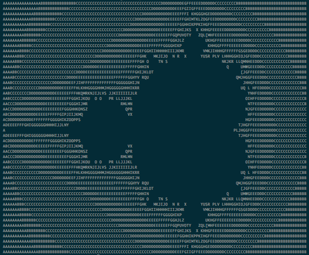

Brainfuck is a minimalist language including only 8 instructions. Since it's really small, it's easy to write a compiler targeting it.
In this article we will first analyze a small brainfuck program to get a feel of how it works. Then we will move on to brainfuck-to-assembly translation, and finally to an actual Just In Time implementation in C.
Brainfuck memory is represented as an array of cells. Each cell is a one byte value used to store a number from 0 to 255 included.
The brainfuck code we write consists of 8 instructions (listed below). An instruction manipulates either the data pointer (one value that indicates which cell is the currently used cell) or the current cell.
Wikipedia lists the basics instructions as:
> : increment the data pointer (to point to the next cell to the right).< : decrement the data pointer (to point to the next cell to the left).+ : increment (increase by one) the byte at the data pointer.- : decrement (decrease by one) the byte at the data pointer.. : output (print) the byte at the data pointer., : accept one byte of input, storing its value in the byte at the data pointer.[ : if the byte at the data pointer is zero, then instead of moving the instruction pointer forward to the next command, jump it forward to the command after the matching ] command.] : if the byte at the data pointer is nonzero, then instead of moving the instruction pointer forward to the next command, jump it back to the command after the matching [ command. The age-old hello world can be written as
++++++++++[>+++++++>++++++++++>+++>+<<<<-]>++.>+.+++++++..+++.>++.<<+++++++++++++++.>.+++.------.--------.>+.>.
Which is not really readable; emphasizing the loop and grouping semantically the characters we can get a better understanding of the code
++++++++++
[
>+++++++
>++++++++++>+++>+
<<<<-
]
>++.
>+.
+++++++..
+++.
>++.
<<+++++++++++++++.
>.
+++.
------.
--------.
>+.
>.
To understand it better, let's execute it line by line, looking at the state of the cells and the data pointer.
Before the first line, the memory is all zeroes and the data pointer is on the first cell:
[ 0 | 0 | 0 | 0 | 0 | 0 ] ^
++++++++++ increments the first cell 10 times. The memory is now
[ 10 | 0 | 0 | 0 | 0 | 0 ] ^
[ test if the pointed cell is 0. Since it's 10, we just skip to the next instruction. We also take a note of its position, since the next ] will use it to jump back here.
>+++++++ moves the data pointer to the second cell, then increments it 7 times
[ 10 | 7 | 0 | 0 | 0 | 0 ]
^
>++++++++++>+++>+ moves the data pointer then increments. It does this for 3 cells. The result is thus
[ 10 | 7 | 10 | 3 | 1 | 0 ]
^
<<<<- goes back to the first cell and decrements it.
[ 9 | 7 | 10 | 3 | 1 | 0 ] ^
] looks at the current cell value (9) and check if it's ≠ 0. Since it is, it jumps back to ] and the loop runs again.
The instruction >+++++++ is run again: it moves the data pointer to the right and add 7 to the second cell
[ 9 | 14 | 10 | 3 | 1 | 0 ]
^
The instruction block will run 9 more times. The last time it's run, memory looks like this:
[ 0 | 70 | 100 | 30 | 10 | 0 ] ^
When reaching ], it will check if the current cell is zero. Since the cell actually contains zero, it won't jump back to ] and will instead go to the next line instruction, >++. . This will move to the second cell and add 2 to its value, making it 72. The dot will then print 72, the ASCII value of 'H'.
To print the next letter we skip to the right cell, increment it once, then print it: >+.
We will print a 'e', the letter corresponding to 101.
[ 0 | 72 | 101 | 30 | 10 | 0 ]
^
So far we've printed the first two characters of "Hello, World". To get the rest of the message we just need to repeat the previous steps for the rest of the code.
Brainfuck is really small so we can easily translate each instructions to assembly by hand. I've chosen to translate to x86_64, the Intel 64 bits architecture, since it's what powers my computer, and probably yours too.
The cells are represented using a contiguous memory zone, indexed by the $rdx register. $rdx will be our data pointer.
Since $rdx is the data pointer, this means that to encode the > instruction, we just need to increment rdx. In x64 assembly, this looks like add rdx, 1. Similarly, we can encode the < as sub rdx, 1.
To increment the cell content, we need to dereference it using the brackets (nasm uses the Intel syntax). So + translated to assembly is add byte [rdx], 1.
Likewise, - should be assembled to sub byte [rdx], 1.
There are multiple way we could implement the printing of a single character: we could either call into libc's putchar function, or use the write system call ourselves. I've chosen the second option, since it means we don't have to discover and store the putchar address in memory.
The write signature is
ssize_t write(int fd, const void *buf, size_t count);
So we'll need to pass 3 arguments: fd is the file descriptor, buf the address of the bytes we want to print, and count the number of bytes in buf.
Here we want to print to stdout, which is always file descriptor 1 so we will hardcode fd to 1 in the assembly. We want to print one character that is at the address referenced by $rdx, so buf is just $rdx. We only print one character at a time, so count is always 1.
To do a system call in x86_64 we need to pass the syscall number and syscall arguments in registers. The syscall number goes in $rax, and the arguments are going to $rdi, $rsi, $rdx, $r10, $r8 and $r9, respectively.
Since we chose $rdx to be the data pointer we'll need to save it before the syscall, and restore it after. We can use the stack to do so, pushing and popping it.
mov rax, 1 ; write is syscall number 1 for linux (use 0x200018d, a.k.a write_nocancel on OS X) mov rdi, 1 ; write to stdout (fd 1) mov rsi, rdx ; rdx is the address of the one character string [rdx] push rdx ; save rdx to stack to restore it after the syscall mov rdx, 1 ; size of message syscall ; do the write call pop rdx ; restore rdx
The loop is a bit more complicated. A conceptual execution of its steps looks like this:
+--------------+
| |
| Loop start |
| |
+-------+------+
|
| +--------------+
| | |
| +--------v---------+ |
| | | |
| | Loop body | |
| | | |
| +--------+---------+ |
| | |
| | |
| +------+ |
| | |
+-----v----v----------+ |
| | |
| Check if current | |
| cell is zero | |
| | |
+-------+-------+-----+ |
| | |
Yes | No +----------------+
|
+-------v------------+
| |
| Loop ends: |
|get next instruction|
| |
+---------+----------+
|
v
...
When we encounter a ] we need to jump to the location of the corresponding [ and vice-versa. An elegant solution to this problem is to use a stack: we store an offset every time we encounter [, and get it back every time we encounter the counterpart ].
Here's the assembly to compare the current cell value with zero and jump if the comparison is true:
cmp byte [rdx], 0 jne -0x9 ; jump 9 bytes before this instruction
We'll see later how to plug-in the offset of the jump inside the generated machine code.
nasmNow that we have the assembly required for the translation, we need to convert it into code that can be understood and executed by the CPU: machine code. To do this, we can use nasm, an x86 assembler. Its job is to turn something human readable like add rdx, 1 into machine code, like 48 83 c2 01.
To assemble an instruction, we need a file specifying to nasm which bit width we want to use, along with the assembly:
; in file add1.asm BITS 64 add rdx, 1
The assembly is done with nasm -f bin add1.asm -o add1.bin. Printing add1.bin (in hexadecimal using xxd add1.asm) shows us the machine code.
All the files are in the asm/ directory of the project on github. You can create all the .bin by running make asm.
We now have most of the machine code needed to turn a brainfuck code into executable memory.
A JIT (Just-In-Time) compiler doesn't produce an executable file on disk; instead it parses the input file and execute it on the fly. In our case it helps to simplify the implementation: we won't need to write a complex executable file like an ELF or mach-O.
Usually when we write C code we don't need to worry about page permissions. For emitting and running code, we'll need to get an executable memory page. On modern platform, for security reason, you often don't want to have memory that is writable and executable simultaneously. This can be enforced by the CPU and is known W^X, standing for Write XOR eXecute. It's also known as DEP (Data Execution Prevention).
To get around this limitation, we can use mmap to ask the kernel to get us a page that is readable, writable and executable:
void *executable_pointer = mmap(0, size, PROT_READ | PROT_WRITE | PROT_EXEC, MAP_PRIVATE | MAP_ANONYMOUS, -1, 0);
The pointer that mmap will return will be a pointer to a memory region that is at least size long (it's rounded up to the closest page).
In the assembly section above, we didn't account for different jump offset. If we assemble the example using different offset, we can notice a pattern
00000000: 803a 000f 85e6 bead de assembly for compare then jump to 0xdeadbeef 00000000: 803a 000f 85e7 ffff ff assembly for compare then jump to -0x10 (-0x10 can be written 0xffffffe7 in two-complements)
Turns out that the last four bytes of the instructions are a 32 bit offset. This offset tells, relatively to the current instruction pointer, where the jump should go. A 32 bit offset doesn't cover the whole 64 bits address range, but this should be enough for our purposes.
Here's the code doing the assembly:
// add code that do the set up: // sets rdx to address of the cell array code[0] = 0x48; code[1] = 0xba; code += 2; // write the actual address of the cells in the machine code memcpy(code, &begin_cells, sizeof(unsigned char *)); code += sizeof(unsigned char*); // create the stack we will use to track the loops stack *jumpback_stack = stack_create(sizeof(unsigned char*)); // read each character from the input, one at a time for (unsigned char *cur_command = command; cur_command < command + command_size; cur_command++) { debug("decoding command #%d", ++n); unsigned char *ins_code = NULL; size_t size; if (*cur_command == '[') { // We write an unconditional jump to the corresponding ']', where the // 'is the current cell zero' check is made. This avoids the duplication // of that code. // Here we put a dummy value in the last 4 bytes of the instruction. It will // be filled later when we process the end of the loop structure. unsigned char base[5] = "\xe9XXXX"; ins_code = base; size = 5; // note the current position (as an offset from start) for later use unsigned char *next_ins = (unsigned char*)(code + size - big_chunk); stack_push(jumpback_stack, &next_ins); } else if (*cur_command == ']') { check(!stack_empty(jumpback_stack), "Mismatched '[' or ']' in input"); // jump is implemented in the form of jmp [RIP + const] unsigned char *addr; stack_pop(jumpback_stack, &addr); addr += (size_t)big_chunk; size = 9; // the jmp argument is relative to next instruction. This means we need // to account for size of jump opcode uint32_t jump_offset = addr - code - size; debug("Making a %d bytes jump", jump_offset); unsigned char base[9] = "\x80\x3a\x00\x0f\x85 "; memcpy(&base[5], &jump_offset,4); ins_code = base; // now we need to fill the jump address of the start of the loop with the // current address. This way we don't duplicate the code of the 'is current // cell zero' check. uint32_t forward_offset = -(addr - code); memcpy(addr - 4, &forward_offset, 4); } else { // it's not a branch instruction, nothing special to do code_for_instruction(*cur_command, &ins_code, &size); } // copy instruction to executable page // ignoring comments if(ins_code) { memcpy(code, ins_code, size); code += size; } } // add `ret` to exit cleanly: code[0] = 0xc3; code++; jitted_code func = (jitted_code)big_chunk; debug("Running compiled code."); func();
The trivial bits like input management, stack implementation, and assembly look-up table aren't presented here but can be found on the github project.
The main problem of this implementation is that there is no code to check if we don't get out of bounds of the cells. This means that a crash can easily happen for malformed input file. The only efficient way to check for this problem would be to add red zones (forbidden memory zones that aren't readable nor writable). This can be done using mmap and mprotect.
This still wouldn't be perfect in case the malformed input simply steps through the red zones without touching them, but it would already help catching some buggy implementations.
Given the structure of brainfuck we could easily improve the performance by collapsing the consecutive + operations.
This means that instead of assembling +++ to
add [rdx], 1 add [rdx], 1 add [rdx], 1
we could reduce the output code size by translating it to add [rdx], 3. Same goes for -, < and >.
One of the biggest useful brainfuck program I could find is a Mandelbrot fractal. Running it on a naive C interpreter takes about 65 seconds on my machine. On the other hand, the (non-optimized!) JIT runs in only 4 seconds.
